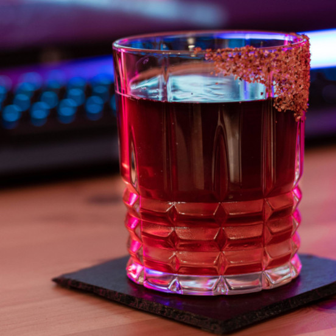

Cyberpunk 2077's Johnny Silverhand

An old fashioned with beer and chilli garnish
Time: 5 minutes; 1 serving.
Truly an atomic drink from the legend himself, Johnny Silverhand, like they serve it in the Afterlife.
Ingredients
- simple syrup, 12ml
- angostura bitters, 1 dash
- orange bitters, 1 dash
- tequila, 60ml
- dark, high alcohol level beer, 90ml
- chilli powder
Instructions:
- Prepare a glass by rimming it with chilli powder.
- In a mixing glass combine everything except the beer.
- Stir over ice and strain into the prepare glass.
- Using the back of a spoon float the beer. Enjoy!
Go back to main page